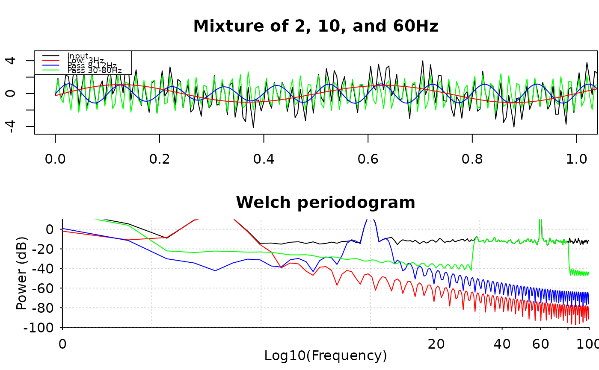

Provides 'FIR' and 'IIR' filter options; default is 'FIR', see also
design_filter_fir; for 'IIR' filters, see
design_filter_iir.
Usage
design_filter(
sample_rate,
data = NULL,
method = c("fir_kaiser", "firls", "fir_remez", "butter", "cheby1", "cheby2", "ellip"),
high_pass_freq = NA,
high_pass_trans_freq = NA,
low_pass_freq = NA,
low_pass_trans_freq = NA,
passband_ripple = 0.1,
stopband_attenuation = 40,
filter_order = NA,
...,
data_size = length(data)
)Arguments
- sample_rate
data sample rate
- data
data to be filtered, can be optional (
NULL)- method
filter method, options are
"fir"(default),"butter","cheby1","cheby2", and"ellip"- high_pass_freq, low_pass_freq
high-pass or low-pass frequency, see
design_filter_firordesign_filter_iir- high_pass_trans_freq, low_pass_trans_freq
transition bandwidths, see
design_filter_firordesign_filter_iir- passband_ripple
allowable pass-band ripple in decibel; default is
0.1- stopband_attenuation
minimum stop-band attenuation (in decibel) at transition frequency; default is
40dB.- filter_order
suggested filter order; 'RAVE' may or may not adopt this suggestion depending on the data and numerical feasibility
- ...
passed to filter generator functions
- data_size
used by 'FIR' filter design to determine maximum order, ignored in 'IIR' filters; automatically derived from
data
Value
If data is specified and non-empty, this function returns
filtered data via forward and backward filtfilt; if data is
NULL, then returns the generator function.
Examples
sample_rate <- 200
t <- seq(0, 10, by = 1 / sample_rate)
x <- sin(t * 4 * pi) + sin(t * 20 * pi) +
2 * sin(t * 120 * pi) + rnorm(length(t), sd = 0.4)
# ---- Using FIR ------------------------------------------------
# Low-pass filter
y1 <- design_filter(
data = x,
sample_rate = sample_rate,
low_pass_freq = 3, low_pass_trans_freq = 0.5
)
# Band-pass cheby1 filter 8-12 Hz with custom transition
y2 <- design_filter(
data = x,
method = "cheby1",
sample_rate = sample_rate,
low_pass_freq = 12, low_pass_trans_freq = .25,
high_pass_freq = 8, high_pass_trans_freq = .25
)
y3 <- design_filter(
data = x,
sample_rate = sample_rate,
low_pass_freq = 80,
high_pass_freq = 30
)
oldpar <- par(mfrow = c(2, 1),
mar = c(3.1, 2.1, 3.1, 0.1))
plot(t, x, type = 'l', xlab = "Time", ylab = "",
main = "Mixture of 2, 10, and 60Hz", xlim = c(0,1))
# lines(t, y, col = 'red')
lines(t, y3, col = 'green')
lines(t, y2, col = 'blue')
lines(t, y1, col = 'red')
legend(
"topleft", c("Input", "Low: 3Hz", "Pass 8-12Hz", "Pass 30-80Hz"),
col = c(par("fg"), "red", "blue", "green"), lty = 1,
cex = 0.6
)
# plot pwelch
pwelch(x, fs = sample_rate, window = sample_rate * 2,
noverlap = sample_rate, plot = 1, ylim = c(-100, 10))
pwelch(y1, fs = sample_rate, window = sample_rate * 2,
noverlap = sample_rate, plot = 2, col = "red")
pwelch(y2, fs = sample_rate, window = sample_rate * 2,
noverlap = sample_rate, plot = 2, col = "blue")
pwelch(y3, fs = sample_rate, window = sample_rate * 2,
noverlap = sample_rate, plot = 2, col = "green")

# ---- Clean this demo --------------------------------------------------
par(oldpar)